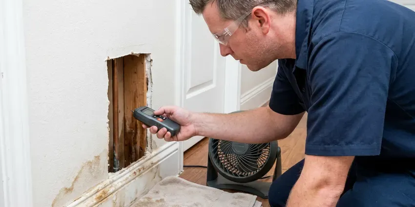

Slab Leak Detection in Cheyenne, WY
Our slab leak techs in Cheyenne, WY combine pressure tests, thermal imaging and acoustic listening to find leaks fast.
- Next-Day Slab Testing
- PEX Reroutes Through the Attic
- Cable Scans on Post-Tension Slabs
- Licensed Plumbers

Book Slab Leak Detection in Cheyenne, WY
A precise mark keeps the hole small and less damage to your flooring.
Local Slab Leak Specialists in Cheyenne, WY
JKV Plumbing sees the same causes behind most slab leaks. Water chemistry can thin copper from the inside, shifting soil moves the pipe, and lines that expand with hot water wear thin where they rub on gravel or rebar. Hot lines fail most.
Work we handle every week:
- Post-tension cable scanning
- Pinpointing leaks to a few inches
- Line tracing to map buried pipe

Additional Plumbing Maintenance Services in Cheyenne, WY
Our maintenance and specialty plumbing services in Cheyenne, WY protect your home year-round and extend the life of every system.


Customers
Why Choose JKV Plumbing for Slab Leak Detection in Cheyenne, WY?
We lay out spot repair, reroute and repipe side by side, each with a price and a straight opinion. The advice depends on the pipe. A house with one pinhole in healthy copper does not need a repipe, and we will tell you so.
- Local Experience, We know the slab types and pipe common in Wyoming, which speeds up locating.
- Soil Protection, Leaking water swells or erodes the soil under the foundation, which leads to cracks.
- Right Equipment, Ground microphones, thermal cameras and line tracers ride on every slab leak truck.
Citywide Coverage
Post-tension or conventional, your slab gets the same careful locating in Cheyenne, with pressure isolation and line tracing before anyone listens through the concrete. Scheduling is fast. Slab leaks get worse with time, so most tests happen within a day of your call.
Experienced Team
They have located leaks under every kind of floor. They know how to separate real leak sounds from noise like refrigerator compressors, HVAC fans and traffic, and that skill comes from many hours listening through concrete.
Safety-First Approach
Our locating methods do not damage your home, and the tracer gas we use is a harmless hydrogen and nitrogen mix that vents off on its own. Floors get covered during work. Repairs meet the building and plumbing codes your city enforces.
Trusted Certified Cheyenne Plumbing Services Professionals
At JKV Plumbing, we are proud to offer certified plumbing services throughout Cheyenne, WY. Those papers on the wall mean something. Our plumbers hold recognized industry credentials, and they follow strict safety and quality rules on every repair, installation and maintenance call we run.
Call Us Now PHCC Plumbing Contractor Recognition
PHCC Plumbing Contractor Recognition Better Business Bureau (BBB) Accreditation
Better Business Bureau (BBB) Accreditation Angi Certified Pro
Angi Certified Pro ISO 9001 Quality Management Certification
ISO 9001 Quality Management CertificationUnder-Slab Leak Work in Cheyenne, WY
Slab Leaks in Older Homes in Cheyenne, WY
Older homes in Cheyenne, WY often have soft copper or galvanized steel under the slab, and both corrode with age. Copper fails at bends and where it rubs concrete, while galvanized rusts from the inside until it splits. We know those failure points. That knowledge points the search at the likeliest spots first.

Commercial Slab Leak Detection in Cheyenne, WY
Offices, shops and restaurants on slabs in Cheyenne, WY can lose a lot of water fast because their supply lines are larger. After-hours testing is available. JKV Plumbing isolates zones, traces mains and branch lines under the floor, then marks the leak so the repair fits around your hours.
Hot Water Slab Leak Detection in Cheyenne
The hot side fails more than the cold. Heat speeds up corrosion, and the pipe expands and contracts every time someone showers, wearing against the gravel and concrete until a pinhole opens. Warm floors and a water heater that runs nonstop are the signs. Energy bills often rise.
Non-Invasive Slab Leak Locating in Cheyenne, WY
We touch the floor last. Pressure tests, line tracing, thermal scans and acoustic listening all happen from the surface in your Cheyenne, WY home, so nothing gets drilled or cut during the search. Once two tools agree, we mark the spot and go over repairs, some of which avoid the slab entirely.
Why Locating First Saves Money in Cheyenne
Detection usually costs a few hundred dollars. Guessing wrong costs far more. Breaking up a floor in the wrong place means paying for concrete work, flooring and a second opening, while a precise mark keeps the job to one opening or a reroute that leaves the slab alone in your Cheyenne property.
Cold Water Slab Leak Detection in Cheyenne, WY
Cold-side leaks leave no warm spot. That makes them harder to spot. They usually show up as a running meter, damp carpet, a musty smell or water seeping at baseboards, so we isolate the cold side, map the pipe with a line tracer and listen along the route with a ground microphone.
Residential Slab Leak Detection in Cheyenne
Single-family homes and townhouses across Cheyenne get the same step-by-step process. Meter test first. We isolate, trace and listen, then confirm with a thermal scan or tracer gas, then explain what we found and give you written repair prices.

Listening Through Concrete in Cheyenne
The microphones pick up faint sounds. That means appliances, HVAC fans and traffic all show up in the headphones, so our techs shut off what they can and learn to tune out the rest, which is a skill that takes years to get good at. A pressurized line gives the clearest sound in your Cheyenne home.
Slab Leak Locating Near You in Cheyenne, WY
Living and working around Cheyenne keeps our arrival times short. After the leak is marked, our plumbers can often start the repair the same week, or set up the reroute for a day that works for you.
Searching for slab leak detection near me in Cheyenne, WY brings up plenty of companies that cut first and locate later. JKV Plumbing locates first, using meter tests and acoustic gear before touching the floor.
JKV Plumbing at a Glance
- Fully licensed plumbing team covering Cheyenne, WY
- Same-day appointments and 24/7 emergency response
- Clear written estimates, no hidden fees
- 4.9-star rated by 782+ Wyoming customers
Cheyenne Map
Cheyenne Information
- Population
- 65,168
- Area codes
- 307/970/720
- Service area
- Cheyenne and communities within 40 miles
- Nearby
- Ranchettes, Laramie, Torrington, Douglas
Ground movement strains pipe buried under concrete, and a leak left for months can start to undercut the foundation. Fast locating limits the damage in Cheyenne, WY.
Talk to a Plumber
Reach out to JKV Plumbing for honest, reliable plumbing from people who know the trade in Cheyenne, WY.
Our Specialized Plumbing Services in Cheyenne, WY
At JKV Plumbing, you get every kind of plumbing service from one company across Cheyenne, WY. We go from leak detection all the way to full system installations, for homes and commercial buildings, and we do it quickly at a fair price. Here are the core services we offer:


From Meter Test to Marked Spot in Cheyenne, WY
Our order is test, isolate, trace, listen. Nothing in your Cheyenne, WY floor gets opened until the spot is marked.
Call (307) 393-4049
Tell us what you are seeing, such as warm floors. We schedule and explain the detection fee.
Isolate and Locate
We pressure test hot and cold lines to find the leaking side, then trace and listen.
Repair Options
We mark the leak and price direct access, reroute and repipe, then we schedule.
Frequently Asked Questions About Slab Leak Detection in Cheyenne
Professional slab leak detection in Cheyenne, WY usually costs between $250 and $700, depending on how hard the leak is to find and how long it takes. Repair costs are separate. They depend on where the leak is and which repair you pick.
You get a marked spot, a written report and repair options. Usually there are three. The choices are a direct repair, an overhead reroute or a full repipe, each priced in writing.
Detection needs no permit. Most repairs need one. Slab cutting, reroutes and repipes typically need a plumbing permit, and JKV Plumbing handles that paperwork.
Locating takes one to three hours. Repairs usually take a day. Full repipes take two to four days, depending on the number of bathrooms and how easy the attic is to work in.
Watch for a water bill that jumps, warm spots on the floor, the sound of water with everything off, damp carpet or a musty smell. New cracks are another clue. Puddles along the outside of the foundation can mean the same thing.
For most of them, yes. Repipes and slab cuts typically require a permit. JKV Plumbing pulls the permit and schedules the inspection in Cheyenne, which keeps the repair on record with the city.
A water line leak is pressurized, so it runs constantly, moves the meter and can warm the floor if it is on the hot side. Sewer leaks work differently. They leak only when water goes down, causing odors, slow drains or damp spots near bathrooms.
Warm spots on the floor, water sounds with everything off, a moving meter and a bill that jumps. So is cracked tile. Mildew near baseboards and damp carpet also suggest a slab leak.
What People Are Saying About Our Plumbing Experts?

Tyler J.
We bought a taller comfort height toilet for my dad, who just had knee surgery. The plumber pulled the old one, found the flange was cracked, and replaced it before setting the new bowl. Took about two hours.
Toilet Installation · Laramie, WY
Paul B.
Our pit pump ran nonstop even in dry weather. The plumber found the check valve was stuck open, so the same water kept cycling back into the pit. New valve, new float switch, done in an hour. It runs quiet now.
Sump Pump · Rawlins, WYMark T.
The floor drain in our office break room backed up every few weeks. The plumber ran a cable, then put a camera down and found roots at a joint about thirty feet out. Seeing it on the screen made the decision easy.
Drain Cleaning · Casper, WY
Megan L.
Our upstairs tub drained so slowly that every shower turned into a bath. JKV Plumbing pulled a wad of hair out of the stopper and then snaked the line past the trap. Three months later it still drains fast.
Drain Cleaning · Douglas, WYCarlos V.
Our house still had galvanized pipe, and upstairs the shower was a trickle. The crew repiped everything in PEX over three days and patched every drywall hole before they left. The pressure difference is night and day.
Repiping · Rawlins, WY
Diane F.
My kitchen faucet had dripped for months and I finally got tired of hearing it at night. JKV Plumbing came out the next morning, replaced the cartridge and the O rings, and tightened a loose base that was letting water under the sink.
Faucet Repair · Casper, WY